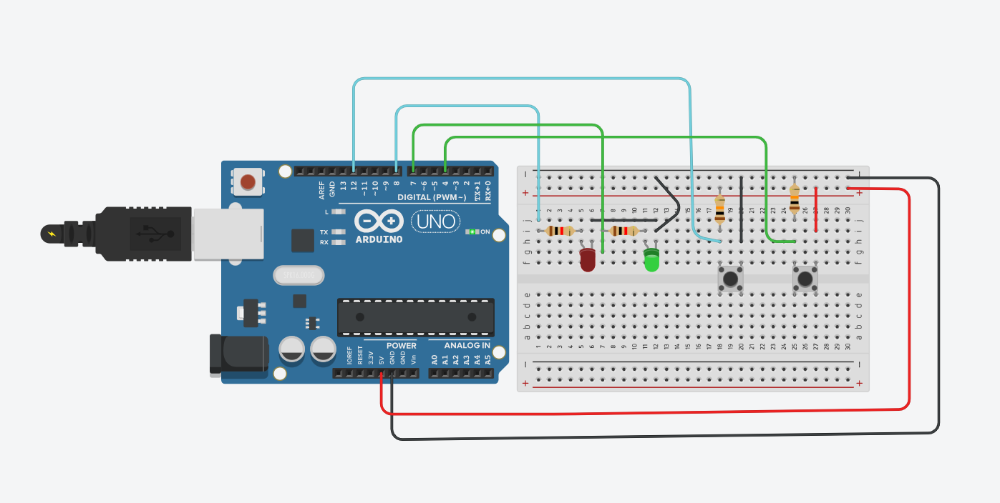

Introduction to Tinkercad
Tinkercad is a free, online platform developed by Autodesk that allows users to create 3D designs, simulate circuits, and write code for microcontrollers. It's widely used by students, hobbyists, and educators.
Key Features
- 3D Design: Create and modify 3D models using a drag-and-drop interface.
- Circuits: Build and simulate electronic circuits using components like resistors, LEDs, and microcontrollers.
- Codeblocks: Visual programming using block-based coding for animations and simulations.
- Microcontroller Support: Simulate Arduino projects with coding in C/C++ or blocks.
Getting Started
- Visit www.tinkercad.com
- Create a free account or sign in with Google/Autodesk credentials.
- Choose between 3D Design, Circuits, or Codeblocks.
- Use the intuitive interface to start building your project.
Task 1: Lighting an LED
The following image illusttrate blinking and LED light at certain intervals using tinkercad
Task 2: Varying LED Brightness using PWM
PWM (Pulse Width Modulation)- This refers to the aspect of obtaining analog signals through digital means
This is achieved by turning the digital signal ON and OFF at high frequency. The width The width (duty cycle) of the ON pulse controls the effective power.The width (duty cycle) of the ON pulse controls the effective power. of the ON pulse controls the effective power.
The duty cycle is measured as a percentage of time the sigal is ON in one cycle:
- 100% = always ON
- 50% = ON half the time
- 0% = always OFF
The following image illustrate the duty cycle
The following images illustrate the circuit and code respectively used to vary LED brightness using PWM values
Task 2: Illustration of pull up and pull down resistor
The following images illustrate a combined simulation of pull up and pull down resistors (Illustration of circuit and code respectively)

// Using pull up & pull down resistor
// Initialziing LED pull up resistors
int LEDPin=8;
int buttonPin=12;
int buttonRead;
// Initializing LED pull down resistors
int LEDPin1=7;
int buttonPin1=4;
int buttonRead1;
int dt=100;
void setup() {
Serial.begin(9600);
pinMode(LEDPin, OUTPUT);
pinMode(LEDPin1, OUTPUT);
pinMode(buttonPin, INPUT);
pinMode(buttonPin1, INPUT);
}
void loop() {
buttonRead=digitalRead(buttonPin);
buttonRead1=digitalRead(buttonPin1);
Serial.println(buttonRead);
Serial.println(buttonRead1);
delay(dt);
// for pull up resistor
if(buttonRead==1){
digitalWrite(LEDPin,LOW);
}
if(buttonRead==0){
digitalWrite(LEDPin, HIGH);
}
// for pull down resistor
if(buttonRead1==1){
digitalWrite(LEDPin1,LOW);
}
if(buttonRead1==0){
digitalWrite(LEDPin1, HIGH);
}
}
Applications
- Learning electronics and programming (Arduino, basic circuits)
- Creating 3D models for 3D printing
- Teaching STEM concepts in classrooms
- Prototyping ideas quickly